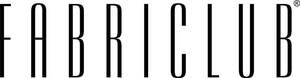

Trade Mark Journal No.2026/011 13 March 2026
UK00004312487 18 December 2025 (20,24,35,40,42)

- Class 20
- Cushions [furniture]; Outdoor furniture; Furniture for kitchens Beds, bedding, mattresses, pillows and cushions; Kitchen dressers [furniture]; Leather furniture; Furniture and furnishings; Upholstered furniture; Seat cushions; Shop furniture; Benches [furniture]; Furniture; Household furniture; Bedroom furniture; Pouffes [furniture]; Tables [furniture]; Cushions; Yoga cushions; Garden furniture; Cushions (upholstery); Chair cushions; Chairs being office furniture; Pet cushions; Nursery furniture; Cushions (Pet -) .
- Class 24
- Textile fabrics for use in the manufacture of curtains; Textile fabrics in the piece; Non-woven fabric; Non-woven textile fabrics; Jute fabric; Waterproof fabric; Shower curtains; Textile fabrics for use in manufacture; Woven fabrics; Textiles for upholstery; Textile piece goods for making cushion covers; Interior decoration fabrics; Waterproof textile fabrics; Household textiles; Coverings for furniture; Curtains; Textile fabric; Fabric curtains; Chenile fabric; Curtain fabrics; Textile material; Textile fabrics for use in the manufacture of furniture; Textile fabrics for use in the manufacture of bedding; Curtain material; Textile fabrics; Adhesive fabric Cushion covers; Tablecloths of textiles; Covers for cushions; Material (Textile -); Polyester textiles; Cotton fabric; Curtain fabric; Chenille fabric; Textiles for furnishings; Textiles for interior decorating; Pillow covers; Fabrics; Textile tablecloths; Cushions (Covers for -); Silk fabric for printing patterns; Knitted fabric; Cushion covering materials; Polyester fabric; Fabric Tapestries of textile; Textiles; Linen [fabric]; Textile fabrics for the manufacture of clothing; Woven fabrics for cushions; Fabrics for interior decorating; Tablecloths of textile.
- Class 35
- Digital marketing; On-line advertising; Online advertisements; Direct marketing; Retail services in relation to homeware; Product marketing; Internet marketing; Business management of wholesale and retail outlets; Online advertising; Online advertising services; Online ordering services; Online marketing; Shop retail services connected with carpets; Advertising and marketing; Marketing, advertising, and promotional services; Retail services in relation to fabrics; Advertising, marketing and promotional services; Retail services in relation to furniture; Marketing assistance; Marketing; Marketing services; Online advertising on a computer network; Advertising and marketing services; Business marketing services; Online advertising on computer networks; Advertising, marketing and promotion services; Retail services relating to home textiles; Business management of retail outlets; Retail services in relation to furnishings .
- Class 40
- Fireproofing of fabric; Textile weaving; Textiles (Fireproofing of -); Fabric dyeing; Laminating of textiles; Dyeing (Textile -); Textile fireproofing; Fireproofing of textiles; Edging of fabric; Fabric waterproofing; Textile and fabric treating; Fabric fireproofing; Dyeing [for textile or furs]; Textile dyeing; Textile printing; Waterproofing of fabric; Dyeing of woven textiles; Dyeing of textiles .
- Class 42
- Design of furniture; Interior decor design; Architectural design for exterior decoration; Design of interior decor for shops; Interior design services for the retail industry; Design of furnishings; Interior decorating design; Office furniture design; Design services relating to interior decorating for homes; Furniture design; Planning and design of retail premises; Decor (Design of interior -); Design of interior decoration; Design of interior décor; Retail design services; Architectural design for interior decoration; Interior decorating .
SEBATEX UK LTD